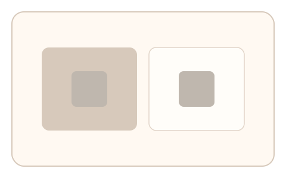
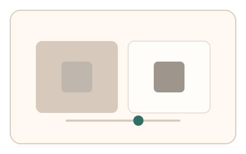

#65
视觉思考范式：Gestalt/对称/频率
已扩展
同时对比亮度匹配
不同背景下调节中心块亮度到看似相等，用对比错觉的稳定点与调整曲线验证真实性。
概念原文
两个相同亮度的中心块处于不同背景，用户调节其中一个直到“看起来相等”。记录调整曲线与稳定点。
把“对比错觉”当作验证特征，而非视觉识别。
研究背景
同时对比会让相同亮度在不同背景上呈现不同主观亮度。通过测量亮度匹配的稳定点与调节路径，可形成可靠的知觉偏差特征。
核心机制
- 两个中心块置于不同亮度背景。
- 用户调节其中一个中心块亮度到“看起来相等”。
- 记录稳定点与回拉轨迹。
- 分析对比错觉偏差与调整节奏。
用户流程
- 步骤 1：用户看到不同背景上的中心块。
- 步骤 2：用户调节亮度至主观相等。
- 步骤 3：系统记录稳定点并判定。
判定信号
亮度匹配稳定点
对比错觉引发稳定的偏移方向。
调整曲线与回拉节奏
真实匹配通常伴随微调与回撤。
判定逻辑
评估稳定点是否落在错觉范围，并结合调整曲线；无偏移或一次到位判异常。
对抗面
- 脚本直接计算亮度差并设定
- 重放真实用户的调整轨迹
防御与缓解
- 随机化背景亮度与中心块大小
- 加入轻微噪声与渐变扰动
- 叠加微时序与轨迹信号进行多信号判定
可达性与风险
提供高对比或替代任务模式，避免对低视力用户造成负担。
- 环境光线影响亮度判断
- 显示设备亮度校准差异
可视化状态

状态 1：对比场景
相同中心块处于不同背景。

状态 2：亮度调节
用户调节到看似相等。

状态 3：稳定点判定
分析调整曲线与稳定点。
参考资料
Simultaneous contrast
说明背景对亮度感知的影响。
Luminance
说明亮度感知与校准基础。